Duomenų šaltiniai
lekt. Šarūnas Kasnauskas, 2018Nuo duomenų iki išminties

Duomenų tipai
Struktūruoti duomenys (Structured data) - griežta schema
Reliacinės duomenų bazės, ERP, CRM,..Pusiau struktūruoti duomenys (Semi-structured data) - schema vėliau
CSV, XML, JSON, HTTP, HTML,..Nestruktūruoti duomenys (Unstructured data) - jokios schemos
Tekstas, vaizdas, garsas,..Išoriniai/Vidiniai
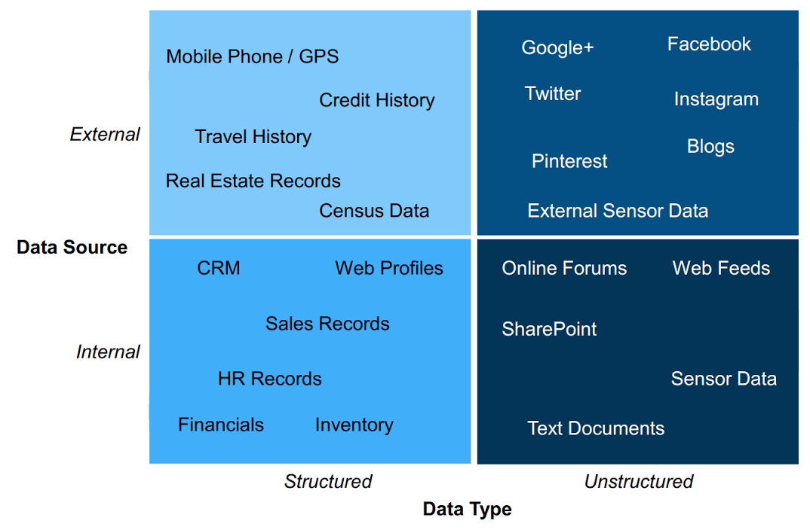Talpinimo tendencijos
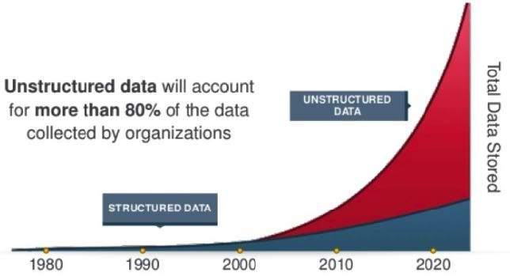Struktūruoti duomenys
Verslo valdymo sistemos
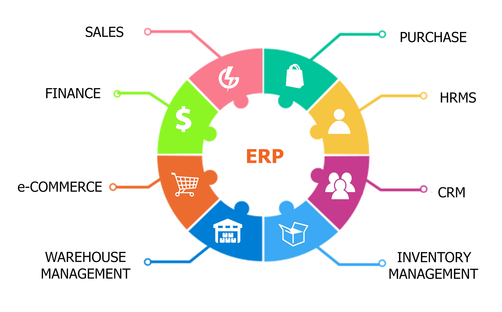Reliacinės duomenų bazės

SQL duomenų tipai

Lentelių sujungimas
Vidiniai sujungimai (INNER JOIN): derinami tik susiję abiejų lentelių duomenys
Išoriniai sujungimai (OUTER JOIN): tinkamai derinami visi susiję duomenys ir visi likę vienos lentelės duomenys
Visas išorinis sujungimas (FULL JOIN): visi duomenys, derinami, kai tai įmanoma
Kryžminiai sujungimai (CROSS JOIN): visi duomenys, derinami bet kokiu galimu būdu

Pusiau struktūruoti duomenys
.csv
Kableliais atskirtos reikšmės (Comma separated values)
paso_numeris, Vardas, Pavarde
MP123456, aaa, bbb
PK123456, ccc, ddd
PK123457, xxx, yyy
.xml
XML (Extensible markup language)
aaa
bbb
ccc
ddd
xxx
yyy
.json
JSON (Javascript object notation)
{
"Asmenys":
[
{
"Asmuo": {
"Paso_numeris":"MP123456",
"Vardas":"aaa",
"Pavarde":"bbb"
}
},
{
"Asmuo": {
"Paso_numeris":"PK123456",
"Vardas":"ccc",
"Pavarde":"ddd"
}
},
{
"Asmuo": {
"Paso_numeris":"PK123457",
"Vardas":"xxx",
"Pavarde":"yyy"
}
}
]
}
NoSQL - Ne tik SQL
NoSQL pranašumai
- Dokumentus kurtigalima iš karto neapibrėžus jų struktūros
- Kiekvienas dokumentas gali turėti unikalią struktūrą
- Vienos duomenų bazės sintaksė gali skirtis nuo kitos
- Papildomus laukus galima pridėti bet kada
NoSQL duomenų bazių tipai
Key-value
Column family
Graph DB
Document
Key-value

Column family
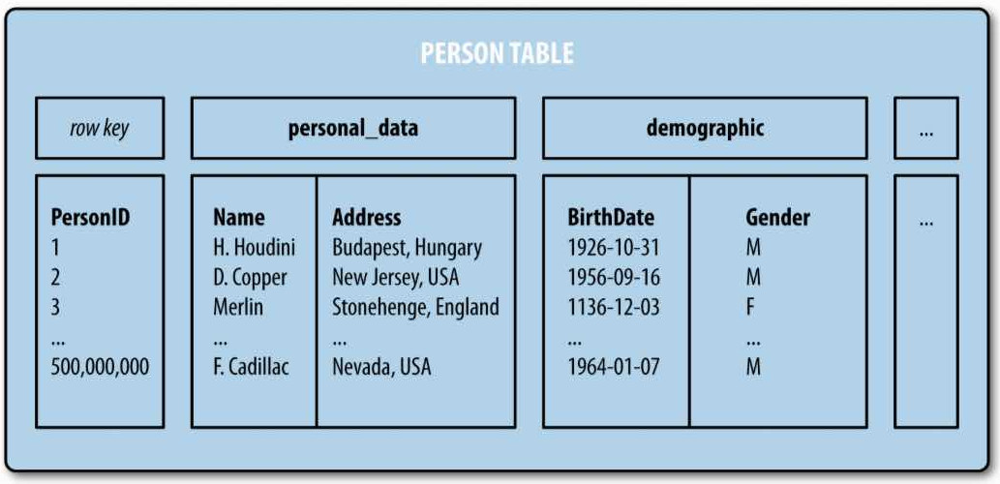Graph DB
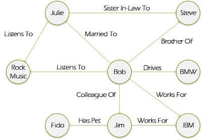Document
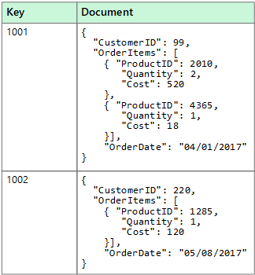NoSQL prieš SQL
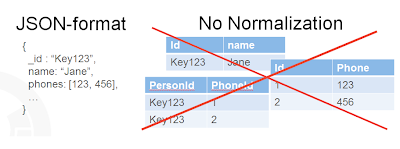Terminų atitikmenys

NoSQL užklausos
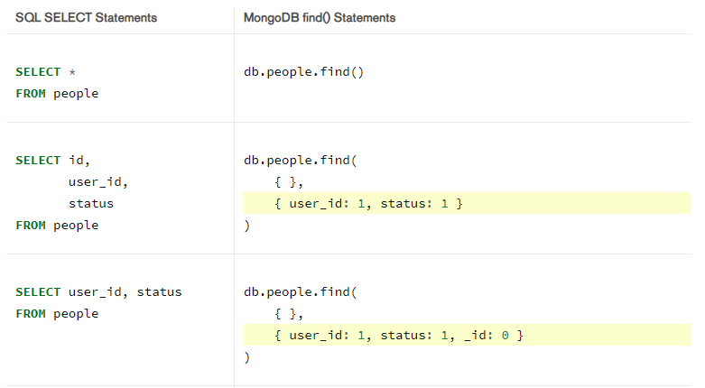HTML
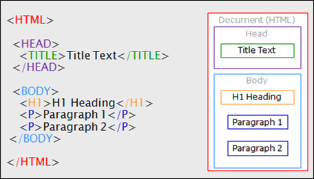Interneto duomenų ištraukimasWeb scraping
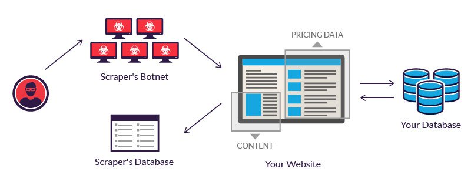HTTP užklausos
http://www.google-analytics.com/__utm.gif?utmwv=4&utmn
=769876874&utmhn=example.com&utmcs=ISO-8859-1&utmsr=
1280x1024&utmsc=32-bit&utmul=en-us&utmje=1&utmfl=9.0
%20%20r115&utmcn=1&utmdt=GATC012%20setting%20variables
&utmhid=2059107202&utmr=0&utmp=/auto/GATC012.html?
utm_source=www.gatc012.org&utm_campaign=campaign+gatc012
&utm_term=keywords+gatc012&utm_content=content+gatc012
&utm_medium=medium+gatc012&utmac=UA-30138-1&utmcc=__utma
%3D97315849.1774621898.1207701397.1207701397.1207701397.1%3B...
WWW analitika
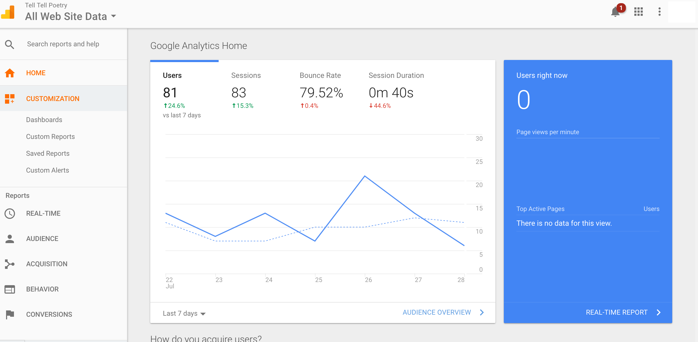Google analytics sekimo kodas